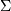
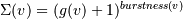
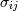
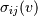
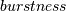
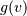

Co-citation Analysis¶
Note
This tutorial was developed for the course Introduction to Digital & Computational Methods in the Humanities (HPS), created and taught by Julia Damerow and Erick Peirson.
Co-citation analysis gained popularity in the 1970s as a technique for “mapping” scientific literatures, and for finding latent semantic relationships among technical publications.
Two papers are co-cited if they are both cited by the same, third, paper. The standard approach to co-citation analysis is to generate a sample of bibliographic records from a particular field by using certain keywords or journal names, and then build a co-citation graph describing relationships among their cited references. Thus the majority of papers that are represented as nodes in the co-citation graph are not papers that responded to the selection criteria used to build the dataset.

Our objective in this tutorial is to identify papers that bridge the gap between otherwise disparate areas of knowledge in the scientific literature. In this tutorial, we rely on the theoretical framework described in Chen (2006) and Chen et al. (2009).
According to Chen, we can detect potentially transformative changes in scientific knowledge by looking for cited references that both (a) rapidly accrue citations, and (b) have high betweenness-centrality in a co-citation network. It helps if we think of each scientific paper as representing a “concept” (its core knowledge claim, perhaps), and a co-citation event as representing a proposition connecting two concepts in the knowledge-base of a scientific field. If a new paper emerges that is highly co-cited with two otherwise-distinct clusters of concepts, then that might mean that the field is adopting new concepts and propositions in a way that is structurally radical for their conceptual framework.
Chen (2009) introduces sigma () as a metric for potentially transformative cited references:

...where the betweenness centrality of each node  is:
is:

...where  is the number of shortest paths from node i to node j and  is the number of those paths that pass through v.
 (0.-1. normalized) is estimated using Kleingberg’s (2002) automaton model.
First, we’ll build a time-variant co-citation network. We’ll then use Chen’s sigma () metric to identify potential turning-points in our corpus.
Getting Started¶
Before you begin, be sure to install the latest version of Tethne. Consult the installation guide for details.
If you run into problems, don’t panic. Tethne is under active development, and there are certainly bugs to be found. Please report any problems, including errors in this tutorial, via our GitHub issue tracker.
For this tutorial, you’ll need some citation data from the ISI Web of Science. If this is your first time working with WoS citation data, check out Getting Bibliographic Data. We’ll assume that you have downloaded a few sets of records from WoS, and stored them all in the same directory.
>>> datapath = '/path/to/my/data/directory'
Reading WoS Data¶
You can parse WoS data from one or multiple field-tagged data files, using the methods in the readers module. Since we’re working with multiple data files, we’ll use the readers.wos.corpus_from_dir method to parse the WoS data and create a new Corpus called MyCorpus.
>>> from tethne.readers import wos
>>> MyCorpus = wos.corpus_from_dir(datapath)
MyCorpus should contain some Papers, as well as some citations.
>>> print len(MyCorpus.papers) # How many Papers?
1859
>>> print len(MyCorpus.citations) # How many citations?
57774
If you have fewer Papers than you expect, it is possible that some of the records in your dataset were duplicates. If you don’t have any citations, go back and make sure that you downloaded full records with citations from the WoS database. See Getting Bibliographic Data.
Building a Co-citation GraphCollection¶
Slicing a Corpus¶
Think of slicing as indexing: we will divide the Papers in our Corpus into bins by publication date, so that later on we can retrieve sets of papers corresponding to particular time-periods. You can slice your data using the Corpus.slice() method.
In this tutorial, we’ll slice our Corpus into two-year subsets using the “time_period” method.

Time-period slicing, with a window-size of 4 years.

Time-window slicing, with a window-size of 4 years and a step-size of 1 year.
>>> MyCorpus.slice('date', 'time_period', window_size=2)
Time-variant co-citation graph¶
We will use the GraphCollection.build() method to generate a cocitation GraphCollection.
The methods_kw parameter lets us set keyword arguments for the networks.papers.cocitation() graph builder. threshold sets the minimum number of cocitations for an edge to be included in the graph. topn sets the number of top-cited nodes to include in each time-slice.
>>> from tethne import GraphCollection
>>> kw = { 'threshold': 2, 'topn': 200 }
>>> G = GraphCollection().build(MyCorpus, 'date', 'papers', 'cocitation', method_kwargs=kw)
Analyzing the GraphCollection¶
According to the equation for sigma () given above, we need to calculate the betweenness centrality and the burstness of each node over time. The analyze.cocitation.sigma() method will do both of these things for us, as described further down in this tutorial. For the sake of illustration, however, we’ll walk through the intermediate steps.
Betweenness centrality¶
Betweenness centrality  is a measure of the structural importance of a node in a graph. Formally, betweenness centrality is a measure of the number of shortest paths that pass through a particular node. A node with high betweenness centrality tends to connect disparate regions of a graph, linking clusters that might otherwise be disconnected.
...where is the number of shortest paths from node i to node j and is the number of those paths that pass through v.
We can calculate the centrality of all nodes in each of the graphs in our GraphCollection using the analyze.collection.algorithm() method:
>>> from tethne.analyze import collection
>>> bc = collection.algorithm(G, 'betweenness_centrality')
bc is a dictionary of centrality values, nested like: { slice : { node : centrality } }.
The nodes in our GraphCollection (G) are also updated with their centrality values.
Burstness¶
Kleingberg’s (2002) burstness model is a popular approach for detecting “busts” of interest or activity in streams of data (e.g. identifying trending terms in Twitter feeds). Chen (2009) suggests that we apply this model to citations. The idea is that the (observed) frequency with which a reference is cited is a product of an (unobserved) level or state of interest surrounding that citation. Kleinberg uses a hidden hidden markov model to infer the most likely sequence of “burstness” states for an event (a cited reference, in our case) over time. His algorithm is implemented in analyze.corpus.feature_burstness(), and can be used for any feature in our Corpus.
Since citations are features in our Corpus, we can use the analyze.corpus.burstness() method to get the burstness profiles for the top-cited reference in our dataset.
>>> from tethne.analyze import corpus
>>> B = corpus.burstness(MyCorpus, 'citations', topn=2, perslice=True)
>>> B['BIOLOGY MR 2009 NATURE']
([2009, 2010, 2011, 2012, 2013], [0., 0.4, 0.6, 0.2, 0.])
perslice=True tells Tethne to get the topn=2 most cited references for each slice in MyCorpus. burstness() returns a dictionary, B; the keys are our cited references, and the values are (dates,burstness) tuples for each reference.
Burstness values are normalized with respect to the highest possible burstness state. In other words, a burstness of 1.0 corresponds to the highest possible state. We can control the number of states by adding the keyword argument k, for example:
>>> B = corpus.burstness(MyCorpus, 'citations', topn=2, perslice=True, k=10)
The analyze.corpus module also provides a simple way to visualize the burstness of our cited references: analyze.corpus.plot_burstness().
>>> from tethne.analyze.corpus import burstness
>>> fig = plot_burstness(MyCorpus, 'citations', topn=2, perslice=True)
>>> fig.savefig('~/burstness.png')
Years prior to the first occurrence of each feature are grayed out. Periods in which the feature was bursty are depicted by colored blocks, the opacity of which indicates burstness intensity.

Sigma¶
Chen (2009) proposed sigma () as a metric for potentially transformative cited references:
The module analyze.cocitation provides methods for calculating from a cocitation GraphCollection and a Corpus in one step.
The method analyze.plot_sigma() calculates for each node in each time-slice of our GraphCollection, and also generates a figure that shows values for the top nodes in each slice.
>>> from tethne.analyze.cocitation import plot_sigma
>>> fig,G = plot_sigma(G, MyCorpus, topn=5, perslice=True)
>>> fig.savefig('~/sigma_plot.png')
In the figure below, the top 5 most sigma-influential nodes in each slice are shown. Red bands indicate periods in which each paper had a high ; opacity indicates the intensity of (normalized by the highest value in the plot). Those red bands suggest points at which that particular paper may have significantly altered the conceptual framework of the field represented by our corpus.

In the last step, the nodes in G were also updated with values. We can write our GraphCollection as a dynamic graph for visualization in Cytoscape using the writers.collection.to_dxgmml() method:
>>> from tethne.writers import collection
>>> collection.to_dxgmml(G, '~/cocitation.xgmml')
In the visualization below, node and label sizes are mapped to , and border width is mapped to the number of citations for each respective node in each slice.